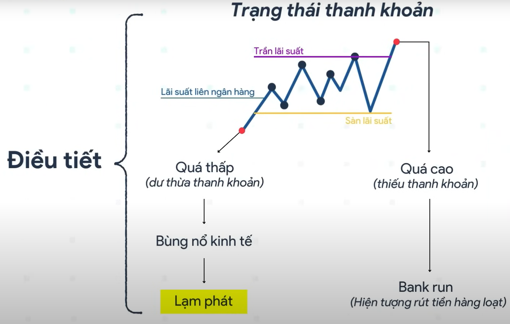

Tìm hiểu cách Ngân hàng Nhà nước điều tiết kinh tế và các phương pháp điều hành lãi suất
Lý thuyết điều hành lãi suất:
Khi người cho vay nhiều, người đi vay ít (tiền rẻ), khiến cho lãi suất thấp, dẫn đến bùng nổ kinh tế, tiềm tàng lạm phát.
Khi người đi vay ít mà người cho vay lại ít (thiếu tiền), khiến cho lãi suất tăng cao, dẫn đến thiếu thanh khoản, rủi ro tạo ra hiện tượng bank run.
Vì vậy, để xã hội ổn định, cần phải có bên điều tiết lãi suất, chính là ngân hàng trung ương Việt Nam - SBV
Cần phân biệt 2 loại lãi suất:
Chính sách lãi suất sẽ được SBV đưa ra, ảnh hưởng vào thị trường 2, rồi mới đến thị trường 1.
Định nghĩa: Lãi suất Ngân hàng Nhà nước (NHNN) áp dụng khi cho các ngân hàng thương mại vay để bổ sung vốn ngắn hạn, thường có tài sản đảm bảo (trái phiếu chính phủ).
Mục đích:
Tác động:
Vai trò: Giới hạn trần (ceiling rate) cho lãi suất liên ngân hàng.
Ví dụ: Năm 2023, NHNN giảm từ 6% xuống 4,5% để hỗ trợ doanh nghiệp.
Định nghĩa: Lãi suất NHNN áp dụng khi mua lại giấy tờ có giá (hối phiếu, kỳ phiếu) từ ngân hàng thương mại trước khi đến hạn.
Mục đích:
Tác động:
Vai trò: Giới hạn sàn (yếu) (floor rate) trong một số trường hợp.
Ví dụ: Năm 2023, lãi suất tái chiết khấu khoảng 3-4%.
Định nghĩa: Lãi suất áp dụng cho khoản vay qua đêm giữa NHNN và ngân hàng thương mại để giải quyết thiếu hụt vốn tạm thời.
Mục đích:
Tác động:
Vai trò: Giới hạn trần (ceiling rate) cao nhất cho lãi suất liên ngân hàng.
Ví dụ: Năm 2023-2024, lãi suất qua đêm khoảng 5-6%.
Định nghĩa: Lãi suất áp dụng trong giao dịch mua/bán giấy tờ có giá giữa NHNN và ngân hàng thương mại trên thị trường mở.
Mục đích:
Tác động:
Vai trò: Hỗ trợ điều tiết trong hành lang lãi suất, không trực tiếp là trần/sàn.
Ví dụ: Năm 2023, lãi suất OMO khoảng 4%.
Định nghĩa: Lãi suất áp dụng cho tín phiếu do NHNN phát hành để hút tiền từ ngân hàng thương mại, thường có kỳ hạn ngắn.
Mục đích:
Tác động:
Vai trò: Giới hạn sàn (floor rate) cho lãi suất liên ngân hàng.
Ví dụ: Năm 2023, lãi suất tín phiếu khoảng 3-4%.
Định nghĩa: Lãi suất tổng quát do NHNN công bố để định hướng các lãi suất thị trường (tái cấp vốn, OMO, v.v.).
Mục đích:
Tác động:
Vai trò: Định hướng tổng quát, không trực tiếp là trần/sàn.
Ví dụ: Năm 2023-2024, NHNN giảm lãi suất điều hành để hỗ trợ kinh tế.
| Công cụ | Giới hạn trần | Giới hạn sàn | Ghi chú |
|---|---|---|---|
| Lãi suất tái cấp vốn | Mức trần cho lãi suất liên ngân hàng. | ||
| Lãi suất tái chiết khấu | (yếu) | Ít sử dụng hơn tín phiếu trong vai trò sàn. | |
| Lãi suất cho vay qua đêm | Trần cao nhất, áp dụng cho vay khẩn cấp. | ||
| Lãi suất thị trường mở (OMO) | Hỗ trợ điều tiết trong hành lang lãi suất. | ||
| Lãi suất tín phiếu NHNN | Mức sàn, khuyến khích mua tín phiếu. | ||
| Lãi suất điều hành | Định hướng tổng quát, không trực tiếp trần/sàn. |
Định nghĩa: Cơ chế mà Ngân hàng Trung ương thiết lập mức trần (ceiling rate) và mức sàn (floor rate) để định hướng lãi suất liên ngân hàng dao động trong khoảng nhất định.
Cơ chế hoạt động:
Ví dụ tại Việt Nam: Năm 2023, trần là lãi suất tái cấp vốn (4,5%) và qua đêm (5-6%), sàn là lãi suất tín phiếu (3-4%).
Định nghĩa: Đặt một mức lãi suất cụ thể làm tham chiếu, điều chỉnh qua thị trường mở.
Ưu điểm: Tín hiệu rõ ràng, linh hoạt.
Nhược điểm: Yêu cầu thị trường tài chính phát triển.
Ví dụ: Fed (Mỹ) đặt lãi suất quỹ liên bang 5,25-5,5% (2023).
Định nghĩa: Tạo sàn bằng lãi suất tiền gửi dự trữ, cung thanh khoản dư thừa.
Ưu điểm: Đơn giản, giảm biến động lãi suất.
Nhược điểm: Có thể tăng cung tiền quá mức.
Ví dụ: Fed (Mỹ) dùng lãi suất dự trữ 5,4% (2023).
Định nghĩa: Áp đặt trần/sàn lãi suất bằng quy định hành chính.
Ưu điểm: Hiệu quả ngắn hạn, hỗ trợ ngành ưu tiên.
Nhược điểm: Làm méo mó thị trường.
Ví dụ: Việt Nam áp trần lãi suất huy động trước 2010.
Định nghĩa: Đặt lãi suất dưới 0% để khuyến khích cho vay.
Ưu điểm: Thúc đẩy chi tiêu trong suy thoái.
Nhược điểm: Giảm lợi nhuận ngân hàng.
Ví dụ: BoJ (Nhật) áp lãi suất -0,1% (2016).
Định nghĩa: Giữ lợi suất trái phiếu dài hạn ở mức cố định.
Ưu điểm: Ổn định chi phí vay dài hạn.
Nhược điểm: Tốn kém nếu thị trường biến động.
Ví dụ: BoJ giữ lợi suất trái phiếu 10 năm quanh 0%.
Định nghĩa: Công bố định hướng lãi suất tương lai để định hình kỳ vọng.
Ưu điểm: Minh bạch, không cần can thiệp trực tiếp.
Nhược điểm: Phụ thuộc vào uy tín ngân hàng trung ương.
Ví dụ: Fed cam kết giữ lãi suất 0% đến khi lạm phát 2% (2020).